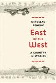
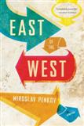
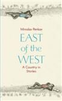

East of the West: Stories
|
 |
 |
 |
Interview Magazine ^top
Twenty-eight-year-old Miroslav Penkov is a Bulgarian immigrant with
a tragicomic overflow of Shteyngartian perceptions of life in a
new heartland. His short-story collection East of the West
(FSG, 6/21) mythologizes his own immigration narrative - watching
the Iron Curtain fall at age 8, leaving Sofia a decade later to
attend college in Arkansas, and accepting a professorship at the
University of North Texas before the age of 30 - all seen through
the lens of outsize characters. These protagonists range from a
young capitalist who tries to buy his communist grandfather Lenin's
corpse on eBay to a divorced father who recounts epics of Ottoman
warriors while outrunning a tornado. They're heart-crushingly
funny, stereotype-splattering creations.
- Madeline K.B. Ross
Interview Magazine
Elle ^top
Bulgarian-born writer Miroslav Penkov's agile and assured
debut, East of the West: A Country in Stories (Farrar, Straus
and Giroux), vivifies his characters' hard-set lives: In the title
story, cousins meet every five years in a river dividing their town;
in "The Night Horizon," a girl given a boy's name performs an
unforeseen act of heroism. In each of these stylistically
old-school yet freshly envisioned morality tales, Penkov burnishes
brute circumstances to surprising beauty.
Elle
Publishers Weekly
^top
Bulgarians, both at home and abroad, are the subject of the wistful,
tragic, and funny stories in this impressive debut. The title
story opens in 1970 with a boy meeting his cousin, Vera, at a
reunion held every five years. Her home, previously located in his
village, is now in Serbian territory, and the river that divides
them plays a central role in their ensuing relationship. In "Buying
Lenin," a young Bulgarian in college in Arkansas enjoys a deepening
relationship with his grandfather, who sees the West as morally
corrupt. In "Devshirmeh," a divorced Bulgarian man living in Texas
relays his great-grandmother's story to his young daughter. The
standout "A Picture with Yuki" finds a Bulgarian man bringing his
Japanese bride to his native land in the hopes of overcoming
fertility problems. Deep in the countryside, among Gypsies, the hope
of life and the sadness of death combine and a tourist's camera is
put to use in ways no one could have expected. This rich and
serious work by Penkov, who was born in Bulgaria and came to America
in 2001, marks him as a talent worth watching.
Reviewed on: 05/30/2011
see original review
Kirkus Review
^top
A gifted Bulgarian writer explores the history of his
country in eight sharp, heartfelt stories about home.
This debut collection from Penkov spotlights the best of the young
(he was born in 1982) writer's output, much of which has been
published in literary magazines. The opener, "Makedonija," sets the
bittersweet scene, depicting a disgruntled old man nursing a grudge
against the fellow who wrote letters to his wife 60 years earlier.
"East of the West" is a Forrest Gump like romance 30 years in the
making between a young man with a busted beak and the lovely cousin
for whom he pines. "Buying Lenin" also presents a romance of sorts,
between a grandson enraptured by America and the Stalinist
grandfather who teases him. In all the stories, Penkov so fully
occupies his narrators that one can almost hear their voices. In
"The Letter," a thieving young minx plays a British transplant for
an easy grand, then blows the cash on a spa day instead of her
friend's abortion. "A Picture with Yuki" demonstrates the
strangeness of the immigrant experience as deftly as stories by Ha
Jin, as a young man and his wife return from Chicago to participate
in an in vitro fertilization program in the capital of Sofia. Often
these stories link the banality of day-to-day survival to the magic
of Bulgarian myth, as in the final story, "Devshirmeh," about a
divorc father telling his daughter the story of a blood tribute.
An unapologetic love letter to a culture of many colors.
Review Date: June 1, 2011
see original
review
Library Journal
^top
Bulgarians experienced an array of political systems in the 20th
century. As a result, considerable effort has been expended in
capturing Bulgarian oral histories during those turbulent times,
Georgi Gospodinov's edited work, I've Lived Socialism. 171 Personal
Stories being the most famous. In this debut collection of short
stories, Penkov (creative writing, Univ. of North Texas) illustrates
the way in which memories shade, as opposed to illuminate,
understanding. This theme emerges in a character who has a
photographic memory but is detached from the world around him. In
another story, a grandfather uses an obsession with the failed
revolution to conceal the truth of his young adult life. Though
fraught with tragedy, loss, and stunted desire, these stories are
written with lightness and humor. Penkov's characters explore their
memories of Bulgaria in order to find liberation from the past.
VERDICT An entertaining debut from a very promising young writer;
readers who enjoy the work of Daniyal Mueenuddin and Jonathan Safran
Foer will find a new favorite in Penkov.
-Joshua Finnell, Denison Univ. Lib., Granville, OH
Philadelphia City Paper ^top
In 2001, 18-year-old Miroslav Penkov moved to Arkansas from
Bulgaria on a college scholarship. By 2008, he'd won the Eudora
Welty Fiction Prize, and Salman Rushdie had selected his
autobiographical "Buying Lenin" for inclusion in that year's Best
American Short Stories anthology. That story closely follows
Penkov's real-life move to the U.S., a choice that, as the piece
describes, prompted bitter responses from relatives: "You rotten
capitalist pig, have a safe flight. Love, Grandpa."*** There's sharp
humor like this throughout the eight stories in East of the West.
Jokes echo across generations of Bulgaria's violent, complicated
history, making this a fantastic collection that lives up to its
audacious subtitle, A Country in Stories. Penkov's writing
style is clear and startling, filled with warmth and wisdom. And
he's adept at both realism and surrealism. In "Makedonija," a
husband worries his wife never loved him. As she recovers from a
stroke in a rest home, he thinks, "A man ought to be able to undress
his wife from all the years until she lies before him naked in youth
again." In "Cross Thieves," we enter bitter, youthful revolutionary
territory. The title story, "East of the West," is amusing and
heartbreaking, soaring from a moment when "the grownups danced
around the fire, then played drunk soccer," to the scene where a boy
mourns his dead sister as he stands on the dome of a church sunken
beneath a river. Penkov's true focus is how people struggle to
preserve their love for each other. These are fearless, gutsy
stories with tremendous impact. Farrar, Straus & Giroux; 240
pp., $24, June 21.
-Matthew Jakubowski
Philadelphia City Paper
*** I love this review and I'm so thankful to Mr. Jakubowski for his
time and kind words. But I owe my family this correction - "Buying
Lenin" is not an autobiographical story and everyone in my family,
without exception, was immensely pleased to ship me off to
America...
The Outlet: The Blog of Electric Literature ^top
an excerpt
.... Perhaps the greatest marvel of East of the West
is its vast spectrum of characters, varied in both age and gender.
"Buying Lenin" and "Cross Thieves" evince Penkov's talent for
creating distinct young adults, but "A Picture with Yuki" and the
eponymous "East of the West" give voice to thirty-somethings with
equal believability. "Makedonija," the opener, is told from the
perspective of an elderly man who feels comic jealousy over his
dying wife's old flame. And Mary, the acerbic thief of "The Letter,"
shows that Penkov can create a convincing female lead. That a 28
year-old Bulgarian can create such diverse characters in a skillful
English, an English he only began to develop in high school, is a
feat in itself.
...For now, we must make do with the short stories, and at 28,
it's not a stretch to say that Penkov has mastered the form, or come
very close. His work resists categorization in all the right ways.
He does not write comedy, or even tragicomedy, though many of the
plot twists are shocking when read out of context. And he is not a
regional writer per se, though the reader will learn a ton about
Bulgaria in the process (for more info, check out Penkov's blog).
But because East of the West is his first release, the labels will
abound "dark Bulgarian comedy," this may very well be called.
But if the content is any indication, Penkov will be his own label,
as he will likely be writing for a long time to come. At your
next literary cocktail party, perhaps five years in the future, you
may simply be able to ask, "have you read any Penkov?"
-Stephen Spencer
Read the full review
Washington City Paper ^top
an excerpt
Melancholy and magic glimmer through Miroslav Penkov's new
collection of stories about Bulgaria, East of the West, in a manner
that brings to mind the world of Zamyatin, Bulgakov, and Babel.
That universe of onion-domed churches, black bread, devils clustered
in trees, and witches' houses on chicken legs finds echoes in
Penkov's Bulgaria, with its mad bagpipe makers who steal and
slaughter goats at night, magical mountains capable of disguising a
woman's beauty to protect her, ferocious Turks, communists who hang
kulaks from walnut trees, and explanations such as "the village
children made fun of Kemal because her head was shiny like a lizard,
because she smelled like a goat and because her father was crazy."
It all seems like classic Eastern European literature, but there's a
difference: These stories are written in English and have an
understated American perspective.
-Eve Ottenberg
Read the full review
Full Stop Magazine ^top
an excerpt
The stories in East of the West are strong alone, and
several have been published previously. But together they create
something exceptional. Setting out to write a work of literature
on the subject of one whole country would be an ill-advised task no
matter how talented the writer. But Penkov tackles his subject with
vigorous specificity, bringing together a flock of small, often
tragic experiences into something that becomes more than a portrayal
of a chunk of land arbitrarily confined by lines on a map, and
begins to draw out the fraught relationships that exist between
people and the things that chunk of land embodies: homes, histories,
and nations.
-Helen Stuhr-Rommereim
Read the full review
Zyzzyva
^top
an excerpt
The narrator of "East of the West" is typical of the pieces
in the collection. Besides being a Bulgarian man, the Penkovian hero
is tough in a wounded, suspicious way. He is hapless, slightly
bewildered (but not so much that he can't crack a joke) by his bad
luck, by how differently from what he imagined everything turns out:
the move to America that leaves him depressed and homesick, the
early talent that never amounts to more than a parlor trick, the
girl who finds someone else. The collection coheres in a way most
anthologies don't, perhaps because the stories are close to one
another chronologically. (At 29, Penkov hasn't had time to go
through different "periods" yet.) But it can't be accidental that
the first and last story mirror one another, bending the book into a
parabola like a piece of flexible wood: Penkov is too skilled an
architect.
-Marianne Moore
Read the full review
The Boston Globe ^top
an excerpt
Eleven years after arriving in America, Penkov has
published one of the most exciting debut collections in recent
memory. The eight stories contained in "East of West'' are funny and
sad and wonderfully natural. Their best heroes feel like Eastern
European cousins to Quentin Compson, the genteel Southerner who
washed up at Harvard in William Faulkner's "Absalom, Absalom!,'' a
man inexorably tied to a place, but determined, for his own
survival, to leave it.
In the end, Compson could never leave
the South. The same can be said of Penkov's characters and their
Bulgaria. However aggressive Penkov's young men and women are about
getting green cards and emigrating to the West, their families tug
even harder in the other direction.
-John Freeman
Read the full review
The LA Times ^top
Miroslav Penkov hit American shores in 2001 (he was 21) from
his native Bulgaria, and he hasn't stopped writing (or winning
prizes for his wild, homesick short stories) ever since. Comrades,
girlfriends, bagpipe makers, Turks, Greeks, Slavs, grandparents,
miners, ghosts and photos - Penkov's teeming stories accomplish
in phrases what lesser writers take chapters to convey - the
immigrant's disorientation, the homesickness for things like bread,
the strange humor of the displaced family.
It is a collection of triumphs; consider the father who
teaches his daughter to play the bagpipes: "'You are,' her father
told her, 'a conqueror of songs.' And so they played together, days
on end, long hours; they danced in circles around the lathe, with
shadows of words on their faces, Kemal's chest ablaze, her fingers
enflamed."
-Susan Salter Reynolds
The A.V. Club ^top
an excerpt
...at its best, East Of The West paints an
eastern-European portrait similar to what Junot Diaz's debut
collection, Drown, did for the Dominican Republic. Both authors even
translated their collections into their own languages themselves.
Penkov's imagination creates a country with loose historical
borders, a people stranded across the world, trying to preserve some
kind of cohesive personal history in contrast to the back-and-forth,
ever-changing story of their homeland.
-Kevin McFarland
Read the full review
The New Republic ^top
an excerpt
... Heirs to a
country where every ethnic and religious group has at one time or
another been the outsider, all of Penkov's characters are displaced
persons, at home or abroad. By letting them tell their grim, funny
stories, Penkov has afforded them a kind of asylum. And by returning
the American language to us in a reinvigorated form, he has given
his adopted countrymen a gift, and his literary peers something to
live up to. These stories are not the promising work of a
first-time author. They are already a promise fulfilled-wise,
bright, and deep with sympathy.
-Alec Solomita
Read the full review
The Barnes and Noble Review ^top
an excerpt
A young man -- he was born in Bulgaria in 1982 -- Miroslav
Penkov possesses an old soul. Such is the conclusion to be drawn, at
least, from the haunting, haunted stories in his debut collection
East of the West. They all exhibit an elegiac, melancholy wisdom
more fitting for some aged, seasoned Isaac Bashevis Singer or even
Tolstoy. They evoke tears, but not a frenzy of wailing; sorrow,
but not utter despair. They seem reflective of the period after
everything has collapsed, when people realize life continues, post
apocalypse, and they must now figure out how to carry on. Of course,
the disintegration of the Soviet empire plays a large part in all
this.
-Paul Di Filippo
Read the full review
Toronto Star ^top
an excerpt
It's hard to imagine a contemporary North American urban
writer expressing him or herself in this way. Penkov's Bulgaria
is a postmodern multicultural mix, but there is also something
primitive and tribal about the place. A poor, culturally divided and
frankly backward country, with many of the people we meet dreaming
of Western lifestyles and trying to make it to America, it
nevertheless exerts an elemental force of attraction through its
land, history and powerful family ties. Blood binds and blood
divides but home is where the heart is.
-Alex Good
Read the full review
Financial Times ^top
an excerpt
Penkov has a fine ear for cross-bred languages, mixing
clich and misunderstanding in comical ways ("The second
stroke", writes the narrator of "Makedonija", "left half of Nora
paralysed, and all of her mute").
The irascible, energetic spirit of East of the West is
perhaps best encapsulated by the narrator of "Devshirmeh", a father
who has lost his wife and job and who, on watching his wealthy
neighbours sail their luxury yachts, experiences yad a Bulgarian
word whose meaning is, he says, "like spite, rage, anger, but more
elegant, more complicated".
-Emily Stokes
Read the full review
The Guardian ^top
Bulgaria past and present, its magical fables, absurdist
realities and political exigencies, are presented through the eyes
of homesick emigr s and those who have remained. Penkov's stories
combine toughness, vulnerability and bravado: from the sorrow of
the young man in the title piece, divided from nearby Serbia and his
tantalising westernised cousin by a river-crossing and a lifetime of
hesitation, to the jealousy and eventual tenderness of an old man
when he discovers ancient love letters sent to his now stroke-paralysed
wife. Penkov's heavily American-accented English can grate, but he
applies humour and compassion in equal measure: this is a
sparkling collection.
-Catherine Taylor
The Guardian
Blurbs
^top
-Ellen Gilchrist, author of Nora Jane and
Victory Over Japan
"Miroslav Penkov is an extraordinary writer. There is a kind of magic at work in EAST OF THE WEST, a beautiful alchemy that combines wisdom and imagery, soul and story to render, finally, the pure gold these tales truly are. May many more books follow this one!"
-Bret Lott,
author of Jewel
and Reed's Beach
"Miroslav Penkov has successfully trapped two elusive creatures: the absurd beauty of Eastern Europe and the emotional paradox of self-exile from that absurdity. His sense of history, his sense of humor, and his ability to create lasting characters make this book a dark yet hilarious pleasure."
-Elizabeth Kostova,
author of The Historian
and The Swan Thieves
"I suspect that Miroslav Penkov would be a wonderful writer in any language, but lucky for us, it happens to be English, and what funny, tender, tragic, and soulful stories he spins from his adopted tongue. East of the West is, simply put, one of the best collections I have read in years, ambitious and accomplished enough in scope to encompass east, west, and all stations in between."
-Ben Fountain,
author of Brief Encounters
with Che Guevara
"Miroslav Penkov unpacks his stories with great skill, drawing the reader so deeply into the world he has created that when the magic comes - a father wrapping his son's eyelash in a handkerchief - it knocks the wind right out of you. EAST OF THE WEST captures the moments that prove we are truly living."
-Hannah Tinti,
author of The Good Thief
"There is something magical in Miroslav Penkov's stories. They evoke the forested mountains and peasant villages of the Balkans... But there is also something un-charming, un-picturesque, and un-romantic in Penkov's work, and this is what makes it important. His tough, true depiction of his tragic homeland's long history of wars, oppression, division, and genocide provides the real magic of this wonderful book."
-Molly Giles,
author of Creek Walk and Iron Shoes
"East of the West is an astonishing debut-a work of singular vision, part fictive history, part fairy tale, that somehow explains this mysterious country. Yet the work is hardly enigmatic: rather than use exoticism as a cloying curtain, it presents the scent of the unfamiliar to draw us to a nuanced understanding-revealing yet universal-of what it is to be a small part in a large story."
-Sabina Murray, author of The Caprices and A Carnivore's Inquiry
Some Reviews in English
Interview Magazine
Elle
Publishers Weekly
Kirkus Review
Library Journal
Philadelphia City Paper
Electric Literature
Washington City Paper
Full Stop Magazine
Zyzzyva
The Boston Globe
The LA Times
The A.V. Club
The New Republic
Barnes and Noble Review
Toronto Star
Financial Times
The Guardian
Interviews
NPR Weekend All Things Considered
BBC Radio Four Front Row
Art&Seek Radio profile
(text+audio)
One Story
Magazine
Orion
Magazine
(audio)
Blurbs
Ellen Gilchrist
Bret Lott
Elizabeth Kostova
Ben Fountain
Hannah Tinti
Molly Giles
Sabina Murray